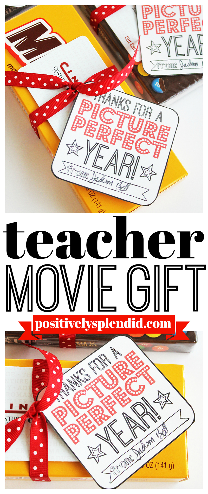
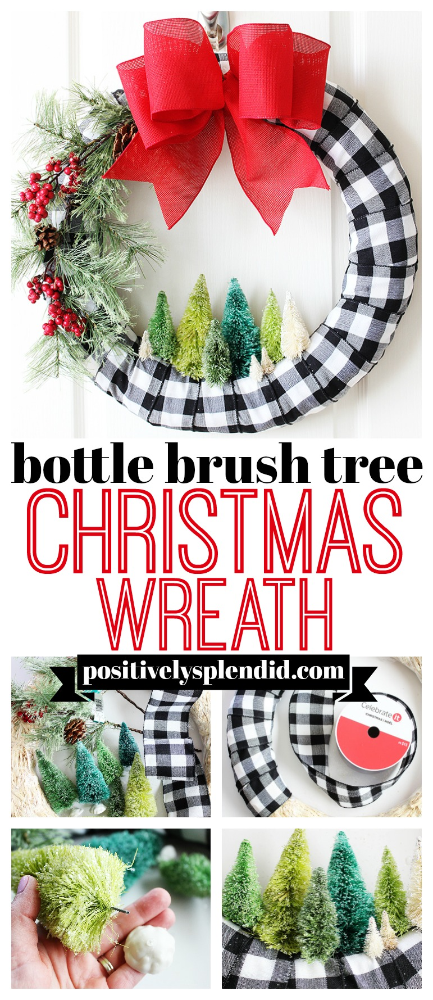
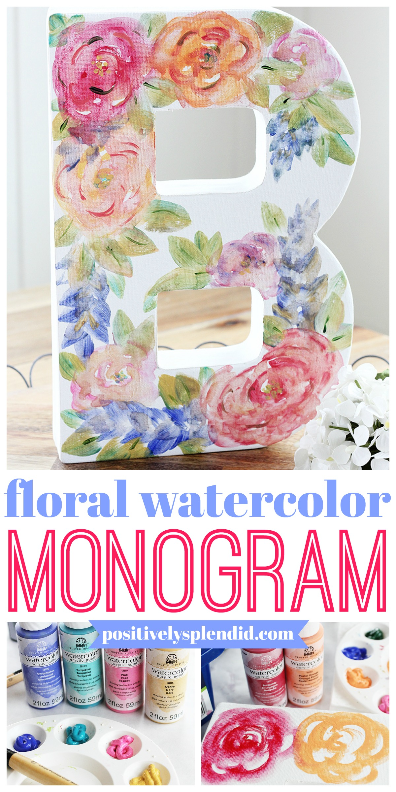
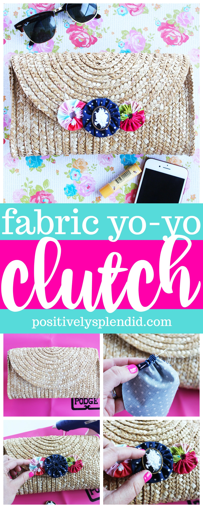

CRAFTS
1. MOVIE GIFT CARD TEACHER GIFTS
Print the tags onto white cardstock, and then cut each out out with scissors. Use a hole punch to make a hole through the top left-hand corner of each tag. Affix the tags to boxes of movie candy with ribbon. Tuck a movie gift card under the ribbon on each box.
2. BOTTLE BRUSH TREE CHRISTMAS WREATH
Wrap the wreath form with one of the ribbon colors/designs, overlapping the edges as you wrap. Secure the beginning and end with hot glue, wrapping tightly so the ribbon doesn’t shift in the finished wreath. Tuck the end of the greenery stem under the wrapped ribbon to secure it to the wreath, o the greenery is attached to the left side of the wreath. Add as many stems as you like for desired fullness. Remove the bases from the bottle brush trees by gently pulling. Use scissors to snip away all but about 1/8″ of the wire stem of each. Affix the trees to the bottom center of the wreath. To do so, apply a small dab of hot glue to the base of each tree, and gently tuck the remaining wire stem down through the ribbon and the straw wreath form. ontinue adding as many trees as desired, nestling them together to form a cozy vignette. Create a bow with the second ribbon color. Secure it to the top center of the wreath with hot glue.
3. DIY MONOGRAM WATERCOLOR CANVAS
Cover your work surface with freezer paper. (I like using freezer paper, since the wax coating on the paper doesn’t allow the water to seep through.) The FolkArt Watercolor Paints are so fun to work with, but the process can be a bit messy! Fill your water basin, and have plenty of paper towels handy before you get to work. Before you start painting on the letter, it can be helpful to use a pencil to lightly trace out the basic shapes of the flowers and leaves you wish to add to guide you as you paint. Now, use the paint and the largest brush from the set to create your floral design onto the surface of the letter. Continue to reading...
4. YO-YO EMBELLISHED STRAW CLUTCH
For my project, I used my free templates and handy fabric yo-yo tutorial to create three yo-yo’s from some of my favorite fabric scraps. I created two 1.5″ fabric yo-yo’s and one 2″ yo-yo for my bag, but you could also add more yo-yo’s or even just one very large yo-yo if you prefer. There are lots of options to make this project your own! When the fabric yo-yo’s were complete, I affixed them in a row with hot glue along the center of the clutch’s flap closure, overlapping the edges slightly. Continue to reading...